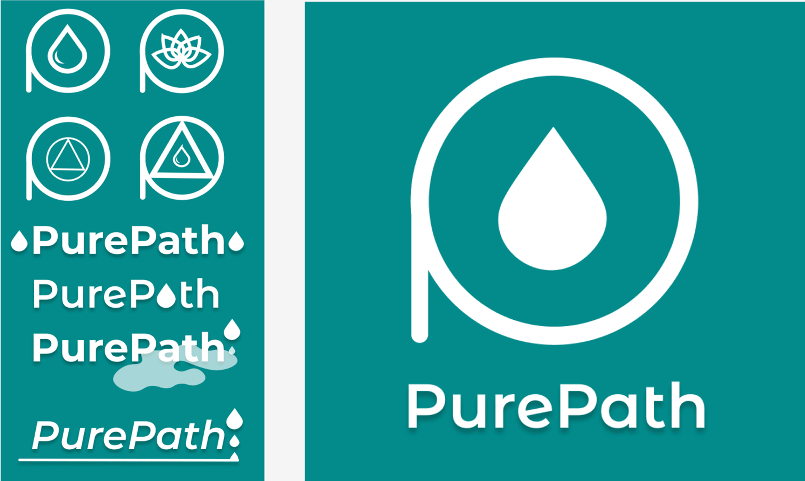
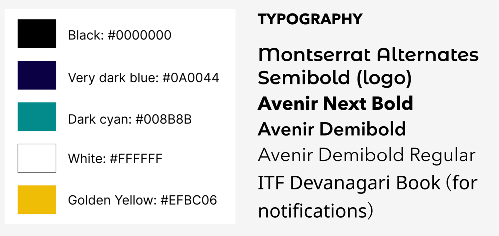

PURE PATH:SUBSTANCE ABUSE RECOVERY APP
Project Purpose: Our project's goal is to create a mental health app focused on helping people struggling with substance abuse. We aim to provide easy-to-use tools and a supportive community to aid individuals in their journey toward recovery.
Why substance abuse?
Substance abuse is prevalant. It is a common form of a mental health battle. Substance abuse can have a silent recovery, users can recover at their fingertips rather than having to go somewhere. Substance abuse recovery is tangible. Users can track progress.
Why named PurePath?
Chose this because it conveys the sense of purity and a clear positive journey towards recovery. Purify yourself.

User Personas
User Empathy Maps
User Journey Maps
Logo Exploration
Style
Wireframes
12 Steps Incorporation Original Idea
- Creating prompt by prompt to lead to completion of each step
- Using sensitive language to let people know they do this on their own time and when they are ready
- Smaller questions leading up to final question for a step
- New milestone after completion of each step
12 Steps Incorporation Final Idea - Use of AI
- Incorporating AI into PurePath to act as a personal therapist
- Each step is locked and AI leads a different conversation based off the step
- Once AI gets to certain point of the conversation where the user completes the step it will give a milestone
- "Purity" will be the cartoon sobriety coach
Purity
Completion of Step
PROTOTYPE
User Test Summary
In general, the majority of users expressed satisfaction with the app's interface, with approximately 90% finding its features beneficial. All users concurred that the information provided within the app was relevant. Feedback regarding the efficacy of our AI companion was mixed. Notably, there were no adverse comments regarding the app's design or the functionality of its map feature. However, there appears to be potential for enhancement in facilitating access to assistance and resources. Nevertheless, users unanimously found the community support feature valuable. A prevalent suggestion for improvement was to enhance the accessibility and user-friendliness of the resources page. In conclusion, there was resounding support among users for recommending our app, PurePath.